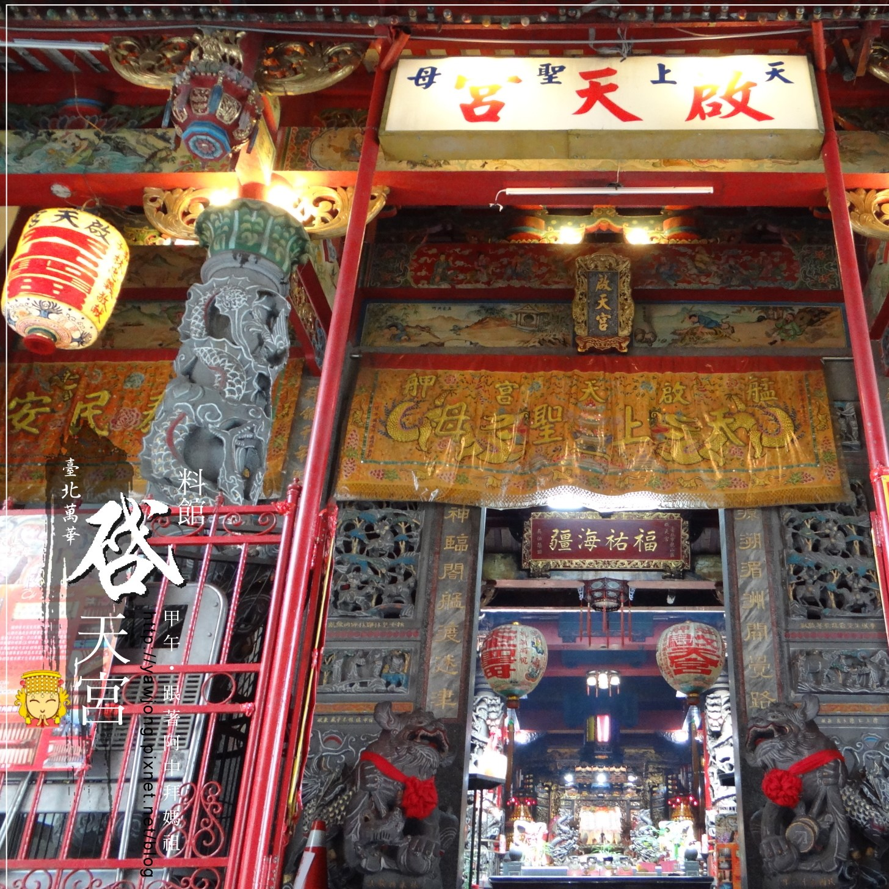

料館媽祖廟
🚂📦📦原是「艋舺大檀越」黃阿祿嫂的料舘（木材行）中奉祀的媽祖神像，因為靈驗而遠近馳名，於是阿祿嫂發心，將料舘讓予媽祖，稱為「料舘天后行宮」。而後又奉祀保護樟腦工人的「防番之神」池王爺與武神關帝君，臺灣日治時期又加奉了傳為原臺北大天后宮的媽祖軟身神像。
🚂📦📦艋舺為清代北臺灣商業中心，自1810年配置戰船保衛河海港口的安全，戰船需要進行例行性的維修，於1825年設立軍工船廠，而修船木料的取得，由清政府配置「軍工匠首」，奉命入山砍伐木材，料館口因為有這些木材加工廠，還有不遠處繁忙的大溪渡口（今貴陽街底）需要很多港口工人，因此這裡聚集了很多從事體力勞動的工人，他們奉祀池王爺、關帝君等武神。